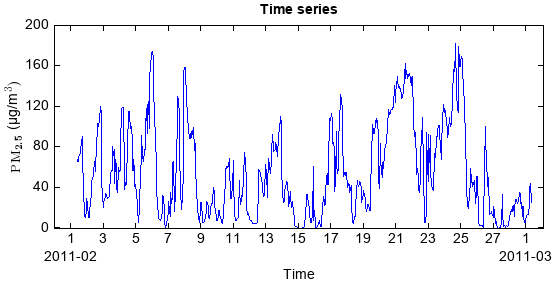

read_table¶
-
DataFrame.read_table(cls, filepath, **kwargs)¶ Create DataFrame by reading column oriented data from a file.
- Parameters
filepath – (string) File path for reading.
delimiter – (string) Variable delimiter character. Default is
None, means space or tab delimiter.format – (string) Colomn format of the file. Default is
None, means all columns were read as string variable.%s: string;%i: integer;%f: float;%{yyyyMMdd...}D: date time.skiprows – (int) Lines to skip at beginning of the file. Default is
0.skipfooter – (int) Number of lines at bottom of file to skip.
encoding – (string) Character encoding scheme associated with the file. Default is
UTF8.names – (array_like) List of column names to use. If file contains no header row, then you should explicitly pass header=None. Default is None.
header – (int) Row number to use as the column names. If column names are passed explicitly then the behavior is identical to
header=None.index_col – (int) Column to use as the row labels (index) of the DataFrame.
index_format – (string) Index column format.
usecols – (list) Return a subset of the columns. If list-like, all elements must either be positional (i.e. integer indices into the document columns) or strings that correspond to column names provided either by the user in names or inferred from the document header row(s).
- Returns
(DataFrame) The DataFrame.
Examples:
fn = 'D:/MyProgram/java/MeteoInfoDev/toolbox/OutlierFlag/sample/54826PMMUL201102_T.txt' df = DataFrame.read_table(fn, delimiter=',', format='%3f', \ index_col=0, index_format='%{yyyyMMddHHmm}D', usecols=['PM10','PM2.5','PM1']) print df.head() pm2_5 = df['PM2.5'].values pm2_5[pm2_5<-10] = nan df['PM2.5'] = pm2_5 t = df.index.data #Hour average dfh = df.resample('H').mean() pm2_5 = dfh['PM2.5'].values t = dfh.index.data #Plot plot(t, pm2_5, '-b') xlabel('Time') ylabel(r'$\rm{PM}_\textbf{2.5}$' + u' (µg/m' + r'$\rm{^{3})}$') tvalues = [] tlabels = [] st = datetime.datetime(t[0].year, t[0].month, t[0].day) while st <= t[-1]: tvalues.append(st) if st.day == 1: tlabels.append(str(st.day) + '\n%s' % st.strftime('%Y-%m')) else: tlabels.append(str(st.day)) st = st + datetime.timedelta(days=1) xticks(tvalues, tlabels) title('Time series')